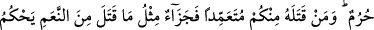
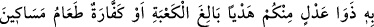
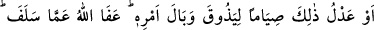
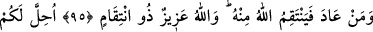
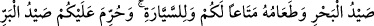
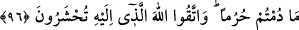

İHRAMLI İKEN AVLANMAMAK,
AVLANMAKLA İLGİLİ HÜKÜMLER
94. Ey îman edenler! Şüphesiz Allah, görmediği halde kendisinden kimin
korktuğunu bilmek için sizi ellerinizin ve mızraklarınızın erişeceği bir avla (onu
yasak ederek) dener. Kim bundan sonra sınırı aşarsa onun için acı bir azap vardır.
95. Ey îman edenler! İhramlı iken avı öldürmeyin. Sizden kim onu kasden
öldürürse öldürdüğünün bir dengi hayvan cezâsı vardır. Bu içinizden âdil iki kişinin
hüküm vereceği, Kâbe’ye varacak bir kurban. Yahut (avlanmanın cezâsı), fakirleri
yedirme şeklinde bir keffâret ya da buna denk oruçtur. Ta ki böylece yaptığı işin
vebâlini tatsın. Allah geçmişi affetmiştir. Kim bu suçu tekrar işlerse Allah ondan
intikam alır. Allah azizdir, intikam alandır.
96. “Hem size, hem de yolculara bir fayda olmak üzere deniz avı ve onu yemek
size helal kılındı. İhramda olduğunuz sürece kara avı size yasaklandı. Huzurunda
toplanacağınız Allah’tan korkun.”
Bu âyet, hicretin altıncı senesinde Hudeybiye yılında nâzil olmuştur. Hudeybiye,
Mekke yakınlarında bir yerin ismidir. Hz. Peygamber (s.a.) Kâbe’yi ziyâret etmek
istemiş ve beraberindeki 1540 sahabi ile Medîne’den hareket ederek Hudeybiye’ye
gelip konaklamıştı. Onlar ihrama girmiş bir haldeyken Allah Teâlâ tarafından “avlanma”
hususunda imtihana tabi tutuldular. Şöyle ki:
Vahşî av hayvanları, malzemelerinin etrafını sarıp o kadar yaklaşmıştı ki, isteseler
elleriyle yakalayabilir mızraklarıyla yaralayabilirlerdi. Onlar da tam bunu yapmaya
niyetlenmişken Allah Teâlâ bu âyeti indirdi: “Ey îman edenler! Şüphesiz Allah, kimin